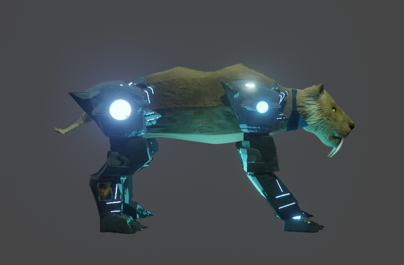

It was a challenge, as the client requested a model that was simultaneously low poly and conveyed the depth of cybernetic detailing — which usually involves complex silhouettes, layered structures, and densely crafted surfaces. Designing a feline body that retained its natural identity while supporting modular mechanical limbs required a careful balance between organic fluidity and industrial rigidity. The beauty of SaberCat lies precisely in that tension: wild chaos, encapsulated in lines of precision.